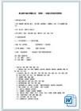

东兴杯课程比赛
发布日期： 关联重心工作： 执行者：1 刘烨 2 李三 3 张思
2011年6月1日上午，在“六一”国际儿童节这天，东城区人民政府区长牛青山、东城区人民政府办公室主任袁秀江、东城区教委主任冯洪荣等领导来到府学胡同小学，亲切看望慰问学校师生，向同学们致以节日的美好祝福。 来宾们在府学小导游的带领下参观了府学石学府、奥运博物馆、府学展室、府学园林等，聆听了同学们精彩细致的讲解。同学们表演了快板等节目，表达了对党和祖国的感恩和祝福。牛区长与孩子们亲切交谈，饶有兴趣地与孩子们一起感受府学600余年的历史文化，把节日的礼物送给孩子们，勉励孩子们快乐学习，健康成长，长大报效祖国。
牛区长听取了校长关于学校文化建设情况的汇报，对府学传统与现代相结合的办学特色给予了充分肯定，并与老师们亲切交谈，对教师们致以诚挚的慰问，希望学校进一步发挥教育教学优势，积极开拓，不断创新，为促进学生健康成长不懈努力。
本次慰问充分体现了党和政府对少年儿童教育事业的重视和关怀，将进一步激励学校在扎实提高基础教育水平的同时，有效提高素质教育水平，不断树立品牌了党和政府对少年儿童教育事业的重视和关怀，将进一步激励学校在扎实提高基府对少年儿童教育事业的重视和关怀，将进一步激励学校在扎实提高基础教育水平的同时，有效提高素质教育水平，不断树立品牌了党和政府对少年儿童教育事业的重视和关怀，将进一步激励学校在扎实提高基础教育水平府对少年儿童教育事业的重视和关怀，将进一步激励学校在扎实提高基础教育水平的同时，有效提高素质教育水平，不断树立品牌了党和政府对少年儿童教育事业的重视和关怀，将进一步激励学校在扎实提高基础教育水平的同时，有效提高素质教育水平，不断树立品牌
- 文档
- 图片
- 视频
更多>>
